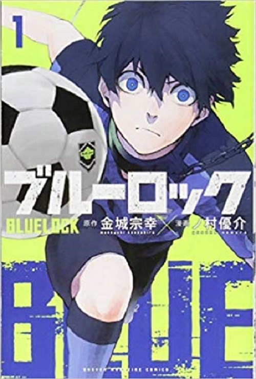
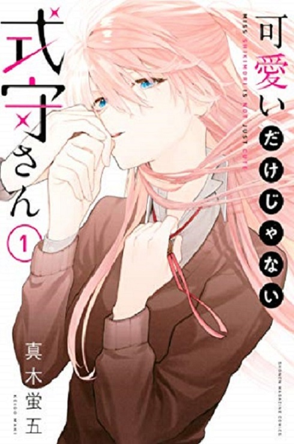

Go Nishimoto.
漫画が好きなので、最近はまってる漫画を紹介します。


「ブルーロック」
第1話で、本田圭佑や長友佑都を「結局世界一になってないから弱い」と批判して話題になった漫画。大まかな
話は、全国から有望な高校生ストライカーが招集され日本を世界1位に導ける最強のストライカーを育成する話
。ただ敗者は日本代表になる可能性が0になので、生き残りをかけたサバイバル要素があるので普通のサッカー漫画の何倍も面白い。
「可愛いだけじゃない式守さん」
ドジっ子男のこの彼女は可愛い見た目で男勝りなかっこいい一面もあるイケメン彼女。二人の日常は見てるだけで癒やされます。